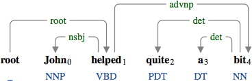
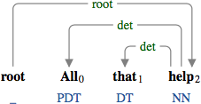
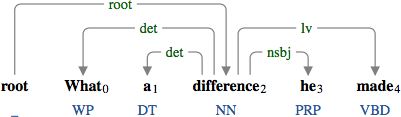

A determiner (det) is a group of definite and indefinite articles, pre-determiners, as well as wh-determiners.

The pre-determiner "quite" and the indefinite article "a" modify the noun "bit".

The pre-determiner "all" and the definite article "that" modify the noun "help".

The wh-determiner "what" and the indefinite article "a" modify the noun "difference".